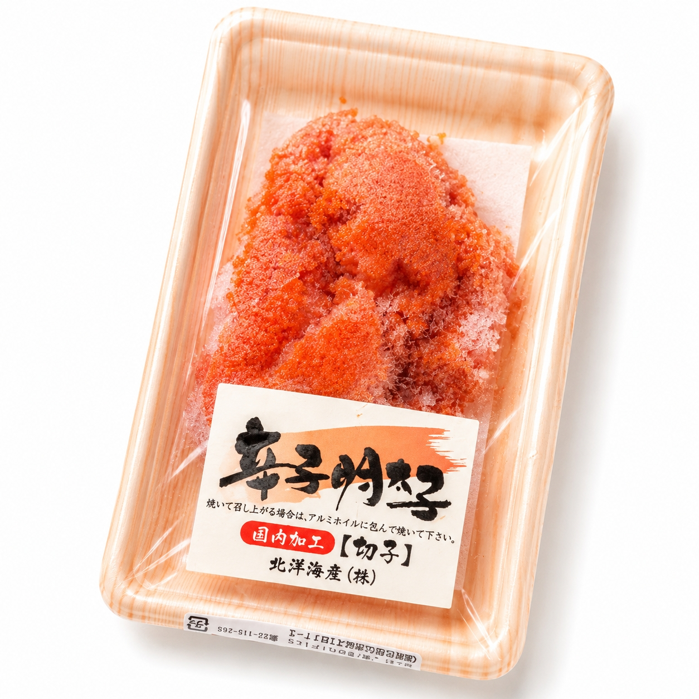
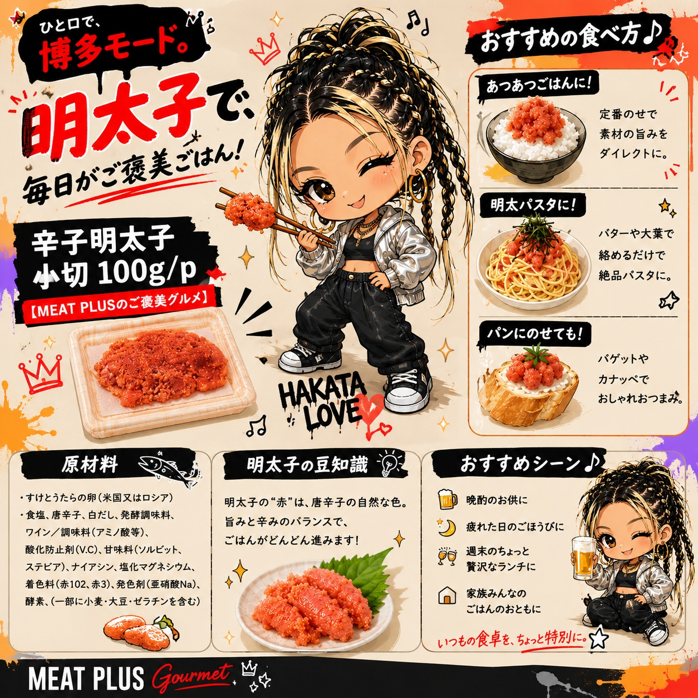

SCENE 01
J020

j 海鮮・魚介類
辛子明太子 小切り
【食卓がぱっと華やぐ、ピリ辛の旨み。使いやすい小切りタイプ。】
- 内容量100ｇ/ｐ
- 保存冷凍
- 産地日本
商品の特徴を読む
ほかほかのご飯に、ピリッと旨辛い明太子をのせる幸せ。そんな日常の小さな贅沢を、もっと手軽にお楽しみいただける『辛子明太子 小切り』をお届けします。プチプチとした粒感はそのままに、白だしやワインなどを加えた秘伝の調味液でじっくりと漬け込みました。唐辛子の辛さだけでなく、すけとうだらの卵が持つ本来の旨みと奥深い味わいが口いっぱいに広がります。使いやすい小切りタイプなので、包丁やまな板は不要。スプーンですくってそのままご飯にのせたり、パスタや和え物に加えたりと、調理の手間をぐっと省きます。明太パスタやおにぎりの具はもちろん、卵焼きに混ぜ込んだり、マヨネーズと和えてディップソースにしたりと、アイデア次第で料理の幅も広がります。便利な100gパックを冷凍でお届けしますので、ストックしておけばいつでも食卓の一品に。今日の食卓に、本格的な明太子の彩りと美味しさを加えてみませんか。
公式サイトへ移動します。価格・在庫・配送条件は移動先で最終確認してください。

SCENE 02
【食卓がぱっと華やぐ、ピリ辛の旨み。使いやすい小切りタイプ。】
SCENE 03
【食卓がぱっと華やぐ、ピリ辛の旨み。使いやすい小切りタイプ。】
PRODUCT INFORMATION
購入前に確認したい商品情報
- 商品名
- 辛子明太子 小切り
- 商品規格
- 100ｇ/ｐ
- 保存方法
- 冷凍
- 原産国
- 日本
- 製造地
- 日本
- 賞味期限
- 発送日より3ヶ月
原材料
すけとうたらの卵(米国又はロシア)食塩、唐辛子、白だし、発酵調味料、ワイン/調味料(アミノ酸等)、酸化防止剤(V.C)、甘味料(ソルビット、ステビア)、ナイアシン、塩化マグネシウム、着色料(赤102、赤3)、発色剤(亜硝酸Na)、酵素、(一部に小麦·大豆·ゼラチンを含む)
FAQ
購入前のよくあるご質問
解凍方法を教えてください。
お召し上がりになる分を、冷蔵庫でゆっくり自然解凍していただくのがおすすめです。品質を損なわず、美味しくお召し上がりいただけます。お急ぎの場合は、パックのまま流水解凍も可能です。
辛さはどのくらいですか？
ピリッとした唐辛子の辛さがアクセントになっていますが、魚卵の旨みやまろやかさも感じられる、ご飯によく合う辛さです。辛いものが極端に苦手な方やお子様は、少量からお試しください。
MEAT PLUS OFFICIAL SHOP
【食卓がぱっと華やぐ、ピリ辛の旨み。使いやすい小切りタイプ。】
仕入れ・加工・梱包・発送まで自社で行うMEAT PLUSの公式オンラインショップでご注文いただけます。
公式オンラインショップで購入する